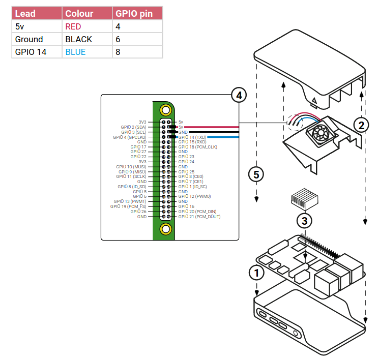

PWM fan control
Description¶
This script is dedicated to control a PWM fan on my Raspberry PI 4B 8 Go. To use correctly this script, please install the fan following the information bellow :
Be sure to plug the cable accordingly !

Script overview¶
pwm_fan_control.py
import RPi.GPIO as GPIO # type: ignore
import time
import subprocess
# Configuration constants
GPIO_PIN = 14
TEMP_THRESHOLD = 50.0
PWM_FREQUENCY = 100
# GPIO pin setup
GPIO.setmode(GPIO.BCM)
# Set to false, other processes occupying the pin will be ignored
GPIO.setwarnings(False)
GPIO.setup(GPIO_PIN, GPIO.OUT)
pwm = GPIO.PWM(GPIO_PIN,PWM_FREQUENCY)
# Initialize PWM
dc = 0
pwm.start(dc)
def get_cpu_temperature():
"""Retrieves the CPU temperature using vcgencmd."""
try:
temp_str = subprocess.getoutput("vcgencmd measure_temp | sed 's/[^0-9.]//g'")
return float(temp_str)
except Exception as e:
print(f"Error retrieving temperature: {e}")
return 0.0
try:
while True:
temp = get_cpu_temperature()
time.sleep(1)
# Adjust duty cycle based on temperature
if temp >= TEMP_THRESHOLD:
new_dc = 100
else:
new_dc = 0
# Update duty cycle if necessary
if new_dc != dc:
dc = new_dc
pwm.ChangeDutyCycle(dc)
except KeyboardInterrupt:
print("Stopping the script.")
finally:
pwm.stop()
GPIO.cleanup()
Setup¶
- Ensuring the GPIO lib is isntalled :
pip freeze | grep RPi.GPIO - Creating a systemd service file :
sudo nano /etc/systemd/system/pwm_fan_control.service - Add :
- Reloading systemctl :
sudo systemctl daemon-reload - Enabling our service :
sudo systemctl enable pwm_fan_control.service - Starting our service :
sudo systemctl start pwm_fan_control.service - Checking our service :
sudo systemctl status pwm_fan_control.service
How to test the script
- Stress the CPU to increase the temp :
fulload() { dd if=/dev/zero of=/dev/null | dd if=/dev/zero of=/dev/null | dd if=/dev/zero of=/dev/null | dd if=/dev/zero of=/dev/null & }; fulload; read; killall dd
The more| dd if=/dev/zero of=/dev/nullthe higher it will reach - You can check the temp with
vcgencmd measure_temp|sed 's/[^0-9.]//g'